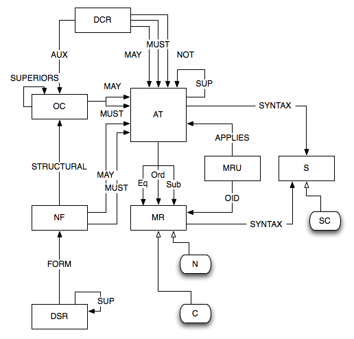
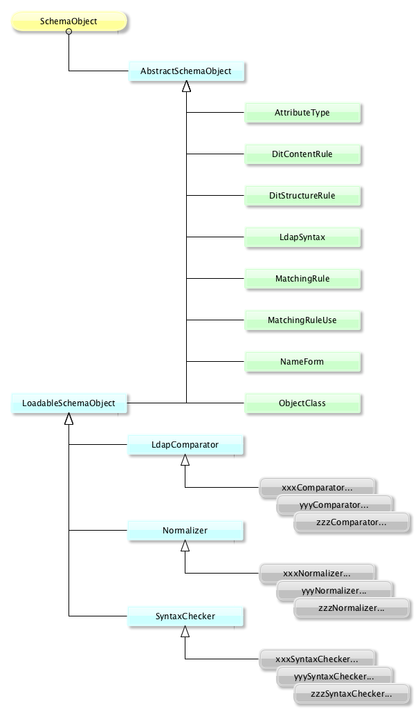

LDAP API
Downloads
Getting Started
Documentation
- Five minute tutorial
- User Guide
- API 1 to 2 migration
- JavaDocs 2
- JavaDocs
- Cross-Reference 2
- Cross-Reference
- Developer Guide
- Internal Guide
Support
Community
About Apache
4.2.1 - Schema Objects
Content
- AttributeTypes
- ObjectClasses
- Syntaxes
- MatchingRules
- DITContentRules
- DITStructureRules
- MatchingRuleUses
- NameForms
- ApacheDS Schema Elements
Introduction
LDAP defines 8 different Schema Objects, that are used to define what we can store in a LDAP server, how what we store is organized, and which constraints are applied on those elements.
In the API, we also define 3 other SchemaObjects, which are necessary to control the values and to compare them. They are hard coded, and can be extended if needed.
The Schema Object list
Here are the 8 LDAP SchemaObjects and the 3 additional ones :
| Name | Description |
|---|---|
| ObjectClasses (e) | Defines the permitted AttributeTypes of an entry |
| AttributeTypes (…) | Defines the type of attributes we can store in an entry |
| Syntaxes (e) | Defines the syntax that is applied to the AttributeType values |
| MatchingRules (e) | The rules that are used to match AttributeType’s values |
| DITContentRules (e) | Defines the allowed or forbidden AttributeTypes and ObjectClasses |
| DITStructureRules (e) | Defines the hierarchical relationships between entries |
| NameForms (e) | Defines the AttributeTypes that may be use in a RDN |
| MatchingRuleUses (e) | Defines the AttributeTypes that can be used for a MatchingRule |
| SyntaxChecker (e) | The function that do the check on values |
| Normalizer (e) | The function that normalize the values |
| LdapComparator (e) | The function that compare two values |
The last three elements are ApacheDS specific.
All those elements have some tight relationships. The following schema expose all the relations between all those elements :

Java Class hierarchy
Here is the relation between the various Java classes that are implementing the various SchemaObjects elements :

As we can see, the 3 specific SchemaObjects are derived from a LoadableSchemaObject abstract class, which allows the developper to inject a new instance of one of those 3 SchemaObjects.
From teh developper point of view, the interesting methods are the following :
- equals() : checks that two SchemaObject instances are equals
- getDescription() : gets the DESC part of the SchemaObject
- getExtension(String) : gets the given extension (X-abc)
- getExtensions() : gets all the extensions for this SchemaObject
- getName() : gets the first name fo this SchemaObject
- getNames() : gets all the nales for this SchemaObject
- getObjectType() : gets the SchemaObject type
- getOid() : gets the SchemaObject OID
- getSchemaName() : gets the associated shcema name, if any
- getSpecification() : gets the OpenLDAP synatx specification for this SchemaObject
- hasExtension(String) : tells if this SchemaObject has some extensions
- isDisabled() : tells if this SchemaObject is disabled
- isEnabled() : tells if this SchemaObject is enabled
- isObsolete() : tells if this SchemaObject is obsolete and should not been used
- isReadOnly() : tells if this SchemaObject can’t be modified
All those methods are available for all the SchemaObject. There are specific methods available for each specific SchemaObject, taht will be exposed in the dedicated pages.